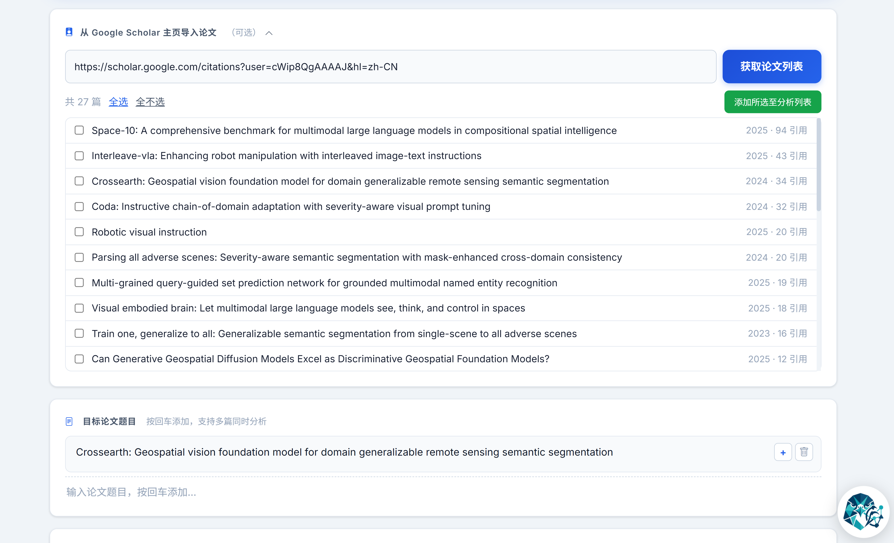

CitationClaw 项目指南（Guidelines）
面向 CitationClaw v2.0.0 的完整使用说明，覆盖从首次配置、三档服务、PDF-grounded 引文语境，到缓存复用、报告问答与接口清单。
1. 文档定位与适用范围
本指南面向三类用户：
- 使用者：希望快速跑通论文被引画像分析，并理解每个配置会影响什么；
- 维护者：希望对齐当前 v2 流水线、服务层级、缓存与故障处理口径；
- 开发者：希望扩展接口、替换模型、调整抓取、PDF 解析与报告链路。
README 和项目主页适合快速了解，本文档是实际运行时的权威配置指南。
2. 项目剖析（架构与流程）
2.1 五阶段流水线
核心执行逻辑位于 citationclaw/app/task_executor.py，当前完整运行路径如下：
- Phase 1施引文献检索：基于 ScraperAPI 抓取 Google Scholar 引用列表，支持题目输入、Scholar 主页导入、多论文与年份遍历；
- Phase 2作者与元数据采集：优先使用 OpenAlex / Semantic Scholar / arXiv / Web of Science 等结构化来源，并下载 PDF 作为作者单位兜底；
- Phase 3学者影响力评估与导出：通过规则预过滤、Search LLM 核验与缓存复用识别院士、Fellow、杰青等高影响力学者；
- Phase 4引文语境提取（可选）：复用 Phase 2 PDF，解析正文并用轻量模型抽取引用原句、章节位置与态度；
- Phase 5画像报告生成（可选）：导出 Excel / JSON，并生成可分享的单文件 HTML Dashboard。
v2 的核心变化是结构化数据优先、Search LLM 与轻量模型分离、PDF 下载与解析链路增强、报告内问答，以及面向成本控制的 Basic / Advanced / Full 三档服务。
2.2 前端结构
- 模板：citationclaw/templates/*.html，包括首页、配置、结果与报告查看；
- 脚本：citationclaw/static/js/main.js 与 websocket.js；
- 交互特性：实时日志、阶段进度、任务取消、年份遍历弹窗、Search/轻量模型预检、配置快捷填充、UI 使用助手。
2.3 后端结构
- Web 框架：FastAPI（citationclaw/app/main.py）；
- 配置中心：Pydantic 配置模型与服务层级预设（config_manager.py）；
- 核心模块：Scholar 抓取、结构化元数据采集、PDF 下载与 MinerU/PyMuPDF 解析、学者预过滤、Search LLM 核验、导出器与 Dashboard 生成器；
- Skills Runtime：注册 phase1_citation_fetch、phase4_citation_extract、phase5_report_generate 等可替换阶段 Skill。
2.4 数据与产物结构
新流程默认输出到时间戳目录：
data/result-YYYYMMDD_HHMMSS/
paper1_citing.jsonl
paper1_author_information.jsonl
merged_authors.jsonl
paper_citing_desc.jsonl
paper_results.xlsx
paper_results_all_renowned_scholar.xlsx
paper_results_top-tier_scholar.xlsx
paper_results_with_citing_desc.xlsx
paper_results.json
paper_dashboard.html跨运行缓存主要位于 data/cache/，包括作者信息、PDF 文件、PDF 解析结果和引文描述缓存。
3. 环境要求
- Python：3.10+（推荐 3.12）；
- 系统：Linux / macOS / Windows；
- 必需网络：Google Scholar、ScraperAPI、OpenAI 兼容服务端点；
- 推荐网络：OpenAlex、Semantic Scholar、arXiv、Web of Science、MinerU、Unpaywall 与出版商页面；
- 依赖管理：项目使用 pyproject.toml 与 requirements.txt。
4. 安装与 Quick Start（首次使用）
4.1 pip 安装（推荐）
pip install citationclaw
citationclaw
# 指定端口
citationclaw --port 80804.2 源码运行（开发者）
git clone https://github.com/VisionXLab/CitationClaw.git
cd CitationClaw
pip install -r requirements.txt
python -m citationclaw
# 或
python -m citationclaw --port 80804.3 启动参数
| 参数 | 默认值 | 说明 |
|---|---|---|
| --host | 127.0.0.1 | 监听地址 |
| --port | 8000 | 监听端口 |
| --no-browser | False | 启动后不自动打开浏览器 |
以下流程按“第一次使用”设计，默认你还没有任何本地配置。
4.4 API 配置建议（按界面图示）

- 填写 ScraperAPI Key，多个 key 用英文逗号分隔，便于轮换；
- 填写 Search LLM API Key 和模型，Search 模型必须支持 web search，用于学者身份核验；
- 轻量模型用于报告生成和引文语境抽取，可留空复用 Search LLM，也可单独配置更便宜的 OpenAI 兼容服务；
- 点击 Search LLM 与轻量模型旁的预检按钮，确认两个模型都能连通；
- 可选填写 Semantic Scholar、Web of Science、MinerU Token、CDP 端口与费用追踪信息；
- 保存配置后再开始分析。
4.5 首次论文选择建议

- 可直接输入目标论文英文题目，也可粘贴 Google Scholar 学者主页 URL 批量导入论文；
- 首次测试建议选 citation < 10 的论文，便于快速跑通全流程；
- 支持多篇同时分析与别名归并，但首次不建议一次加入过多论文，避免调试复杂度和成本上升。
4.6 服务层级建议（首次）
首次建议选择 基础服务（Basic），确认 Scholar 抓取、结构化作者采集和知名学者评估都能跑通。
| 层级 | 推荐场景 | 主要行为 |
|---|---|---|
| Basic | 首次试跑、成本敏感、只看知名学者引用 | 执行 Phase 1-3 与 Phase 5，跳过 Phase 4 引文语境分析 |
| Advanced | 需要理解重要施引论文如何讨论目标论文 | 开启 Phase 4，配置意图为知名学者相关施引论文的引文语境提取 |
| Full | 基金、述职、项目汇报前的完整画像 | 对全部施引论文执行引文语境提取，成本和耗时最高 |
4.7 运行期注意事项
- 完成 API 配置与论文输入后，点击“开始分析”，配置会自动保存；
- 引用量超过 1000 时开启“按年份遍历”，系统会按年份分段抓取，但 ScraperAPI 和 LLM 成本会增加；
- 运行时可通过 WebSocket 实时查看日志、阶段进度、费用预估和取消状态；
- 如果已有作者与引文描述缓存，可使用“从缓存生成报告”快速重建 Dashboard；
- 分析完成后优先查看 paper_dashboard.html，再按需下载 Excel / JSON。
若作者信息质量异常，优先检查 Search Model 是否支持实时 web search；模型不具备检索能力时容易出现幻觉内容。
5. 关键配置指南
5.1 API 与模型配置
| 配置项 | 是否必填 | 说明 |
|---|---|---|
| scraper_api_keys | 是 | 抓取 Google Scholar，建议 3 个以上轮换 |
| openai_api_key | 是 | Search LLM 密钥，用于学者检索、身份核验与需要联网的问题 |
| openai_base_url | 建议 | Search LLM API 基础地址，默认 https://api.gpt.ge/v1/ |
| openai_model | 是 | Search 模型，必须支持 web search |
| light_api_key / light_base_url | 可选 | 轻量模型独立端点，留空则复用 Search LLM 配置 |
| dashboard_model | 建议 | 报告分析与引文语境抽取模型，可无需 web search |
| s2_api_key | 可选 | 提升 Semantic Scholar 速率限制、元数据与 PDF 链接发现稳定性 |
| wos_api_key | 可选 | Web of Science Starter API，用于更高优先级的结构化作者信息 |
| mineru_api_token | 可选 | 用于复杂或较长 PDF 的 MinerU Cloud 解析 |
| cdp_debug_port | 可选 | 连接已登录的 Chrome/Edge 远程调试端口，用于 IEEE / Elsevier / ACM 等浏览器下载 |
5.2 服务层级配置
内置预设在 SERVICE_TIER_PRESETS，前端会根据层级自动派生 Phase 4 与 Dashboard 设置：
- basic：抓取施引文献，采集作者与元数据，评估知名学者，不做引文语境分析；
- advanced：目标行为是在 basic 基础上，仅对知名学者相关施引论文做引文语境提取；
- full：对全部施引论文做引文语境提取，报告最完整，成本和耗时最高。
当前实现说明：Basic 已实际关闭 Phase 4；Full 会对全部 merged records 做 Phase 4。Advanced 会保存 citing_description_scope=renowned_only，但当前主流程尚未按该字段裁剪 Phase 4 输入，因此实际成本可能接近 Full。该差异只影响 Advanced 的范围过滤，不影响 Basic 与 Full 的主要行为。
5.3 稳定性与续跑配置
- enable_year_traverse：按年份遍历，突破 Google Scholar 约 1000 条结果显示限制；
- resume_page_count：从指定页继续阶段 1 抓取；
- retry_max_attempts + retry_intervals：统一 HTTP、登录页和临时失败重试策略；
- scraper_session：保持同一代理会话，缓解不同数据中心返回不一致；
- scraper_geo_rotate：重试时轮换国家节点，需 ScraperAPI 相应套餐支持；
- /api/run/from-cache：利用历史作者与引文描述缓存快速重建报告。
5.4 成本控制配置
- parallel_author_search：并行度越高速度越快，但瞬时请求量与失败重试成本更高；
- scraper_premium / scraper_ultra_premium：稳定性更高但积分成本显著上升；
- api_access_token + api_user_id：启用运行前后 LLM 额度差值追踪；
- Phase 4 是成本大头之一，首次和高被引论文建议先跑 Basic。
5.5 质量与调试配置
- enable_author_verification：对作者身份、头衔、机构等信息做二次真实性核验；
- debug_mode：保存每页 HTML 与解析详情到 debug/；
- test_mode：使用 test/mock_author_info.jsonl 跳过真实 API 调用；
- enable_dashboard：是否生成最终 HTML 报告；
- PDF 下载会记录 PDF_Source 与 PDF_Failure_Reasons，便于判断是访问限制、出版商登录、还是解析失败。
6. API 支持与接口清单
6.1 外部服务支持
- ScraperAPI：用于 Scholar 页面抓取，支持普通 / Premium / Ultra Premium、session 与部分智能回退；
- OpenAI 兼容 API：Search LLM 用于学者核验与联网问答，轻量模型用于报告生成和引文语境抽取；
- 结构化学术源：OpenAlex、Semantic Scholar、arXiv、Web of Science Starter API；
- PDF 解析与下载：MinerU Cloud / 本地解析、PyMuPDF、OpenAlex OA、S2、arXiv、CVF、DBLP、Unpaywall、出版商页面、CDP 浏览器会话等路径。
6.2 内部 REST/WebSocket 接口
| 接口 | 方法 | 用途 |
|---|---|---|
| /api/config | GET/POST | 读取/保存配置 |
| /api/presets | GET | 获取服务层级预设 |
| /api/providers | GET | 获取模型服务商快捷填充预设 |
| /api/run | POST | 按论文标题启动全流程 |
| /api/run/from-cache | POST | 基于历史缓存重建报告 |
| /api/scholar/papers | POST | 爬取 Scholar 主页论文列表 |
| /api/task/start | POST | 仅执行阶段 1 |
| /api/task/continue | POST | 续执行阶段 2/3 |
| /api/task/import | POST | 导入历史抓取 JSONL |
| /api/task/status | GET | 查看运行状态 |
| /api/task/cancel | POST | 取消任务 |
| /api/task/year-traverse-respond | POST | 响应年份遍历弹窗选择 |
| /api/test_openai | POST | 旧版通用 API 与 Web Search 测试 |
| /api/pretest/search_llm | POST | 测试 Search LLM 是否可用 |
| /api/pretest/light_model | POST | 测试轻量模型是否可用 |
| /api/results/folders | GET | 列出结果文件夹 |
| /api/results/list | GET | 列出结果文件 |
| /api/results/view/{path} | GET | 在线查看 HTML 报告 |
| /api/results/download/{path} | GET | 下载结果文件 |
| /api/chat/ui | POST | 前端使用助手（流式） |
| /api/chat/report | POST | 报告问答，支持自动判断是否需要联网搜索 |
| /api/quota/check | GET | 查询 LLM 额度 |
| /ws | WebSocket | 推送日志、进度、阶段事件与完成结果 |
7. 输出产物说明
7.1 标准产物
- *_citing.jsonl：原始 Google Scholar 施引文献抓取结果；
- merged_authors.jsonl：多论文归并后的作者、机构、PDF 与学者评估记录；
- *_results.xlsx：全量结构化结果；
- *_results_all_renowned_scholar.xlsx：所有知名学者引用记录；
- *_results_top-tier_scholar.xlsx：院士/Fellow 等顶层学者子集；
- *_results_with_citing_desc.xlsx：含引用原句、来源和章节位置的增强表格；
- *_results.json：便于程序继续处理的 JSON 输出；
- *_dashboard.html：最终可视化画像报告，单文件可分享。
7.2 关键输出字段
| 字段 | 含义 |
|---|---|
| Data_Sources | 命中的结构化来源，如 s2、openalex、arxiv、wos |
| API_Authors | 结构化 API 采集到的作者、机构与国家信息 |
| PDF_Authors | PDF 首页或正文解析出的作者单位信息 |
| PDF_Download | 施引论文 PDF 是否下载成功 |
| PDF_Source | PDF 成功来源，如 gs_pdf、oa_pdf、arxiv、CVF、CDP-IEEE 等 |
| PDF_Failure_Reasons | 各下载路径失败原因，便于排查访问、权限或解析问题 |
| Is_Self_Citation | 是否被识别为自引 |
| Renowned Scholar / Formated Renowned Scholar | 知名学者识别结果与格式化结果 |
| Citing_Description | PDF-grounded 引文语境描述或失败说明 |
| citing_desc_source | 引文描述来源，如 pdf、cache、pdf_no_context、unavailable |
7.3 可复用机制
- 作者信息缓存：跨运行复用，降低重复查询成本；
- PDF 缓存与解析缓存：Phase 4 会优先复用 Phase 2 已下载和已解析的 PDF；
- 引文描述缓存：重复文献命中缓存，减少轻量模型调用；
- 历史导入与缓存报告：支持从已有 JSONL 或缓存跳过部分步骤。
8. 运行与运维建议
8.1 生产可用默认值建议
- 服务层级：先 basic 验证链路，再切换 advanced/full；
- 并行度：parallel_author_search=3~8，按额度、失败率和模型限速调节；
- 重试：retry_max_attempts=3、retry_intervals=5,10,20；
- 超高被引论文：建议开启 enable_year_traverse，并预留更多 ScraperAPI 与 LLM 额度；
- 正式材料：开启作者验证，重点结论人工核对原始网页、Scholar 主页、大学主页或官方 Fellow/院士名单。
8.2 成本与速度平衡
- 速度优先：提高并行度，准备更多 ScraperAPI key，并使用稳定的 Search LLM；
- 成本优先：先跑 Basic，不做 Phase 4 深挖；需要引文原句时再切换 Advanced 或 Full；
- PDF 成功率优先：配置 S2 Key、MinerU Token，并在有机构权限时启用 CDP 浏览器下载；
- 报告复用优先：不要删除 data/cache/，后续可从缓存重建报告。
9. 常见问题与排查
| 问题 | 现象 | 排查建议 |
|---|---|---|
| 作者信息明显不准 | 头衔、机构、引用量偏差大 | 确认 Search LLM 通过预检且支持 web search；必要时启用 enable_author_verification |
| ScraperAPI 频繁失败 | 抓取中断、页面异常、登录页或地区结果不一致 | 增加 key 数量、检查余额、提高重试间隔；必要时启用 premium/session/geo rotate |
| 引用超 1000 条不完整 | 抓取停在约 100 页 | 开启 enable_year_traverse，按年份分段抓取并合并去重 |
| Phase 4 成本或耗时超预期 | 进阶/全面服务运行很久 | 先用 Basic 验证；Advanced 当前主流程的 Phase 4 范围可能接近 Full，详见 5.2 实现说明 |
| PDF 下载失败 | PDF_Download=false 或 PDF不可用 | 查看 PDF_Failure_Reasons；配置 S2/MinerU；对 IEEE、Elsevier、ACM 可尝试 CDP 已登录浏览器 |
| 报告没有引文描述分析 | Dashboard 提示 Basic 未开启 Phase 4 | 选择 Advanced 或 Full 重新运行，或从已有缓存重建报告 |
| 报告未生成 | 没有 dashboard 文件 | 检查 enable_dashboard，以及 Phase 1-3 是否产出有效数据 |
10. 版本更新历史
| 日期 | 版本 | 变更 |
|---|---|---|
| 2026-05-22 | v2.0.0 | 结构化 API 元数据采集、Skills Runtime 编排、Search LLM 与轻量模型分离、PDF 引文语境提取、三档服务层级与可分享 HTML 报告 |
| 2026-03-18 | beta v1.0.9 | 多篇搜索去重修复、年份遍历非持久化、默认并发数提升、V-API 注册入口、LLM 重试日志和缓存写入优化 |
| 2026-03-14 | v1.0.4 | 界面交互优化，强化服务分层（基础/进阶/全面） |
| 2026-03-12 | v1.0.3 | 支持 PyPI 一行安装，自动打开浏览器，跨平台运行 |
| 2026-03-12 | v1.0 | 首次公开发布：批量导入、多层级分析、断点续爬、缓存复用、HTML 报告 |
当前版本号在 pyproject.toml 与 citationclaw/__init__.py 中均为 2.0.0。
11. 已知事项与后续建议
11.1 已知事项
- Google Scholar 存在天然反爬与结果上限，需结合重试与年份遍历策略；
- 不同数据中心可能导致页面不一致，项目已实现 session 与国家轮换补救；
- 模型质量与检索能力强相关，Search 模型选型直接影响知名学者识别准确性；
- Advanced 的 renowned_only Phase 4 范围过滤仍需后端主流程进一步对齐；
- PDF 下载受出版商权限、地区网络和登录状态影响，失败时应结合 PDF_Failure_Reasons 判断。
11.2 后续建议
- 补齐 Advanced 服务层级对 citing_description_scope 的后端过滤；
- 继续统一 README、Guidelines、Technical Report 与网页首页中的能力描述；
- 将模型预检、PDF 下载来源、缓存命中率纳入更明确的运行健康检查；
- 引入固定测试数据回归、API 兼容性自动体检和文档链接检查。
本项目仅用于学术研究与学习，请遵守 Google Scholar 与第三方 API 服务条款，避免高频违规抓取。正式汇报或评审材料使用前，应人工核验关键作者身份、引用语境和来源链接。